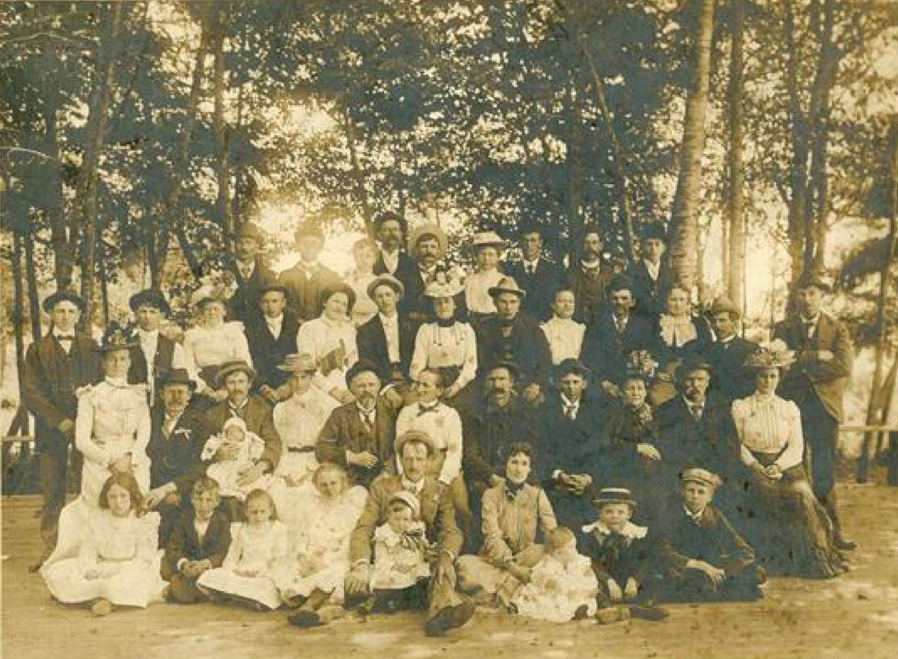
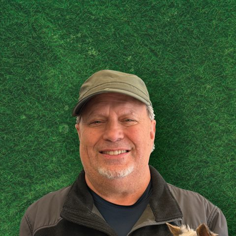
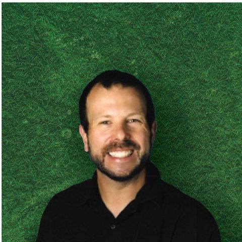
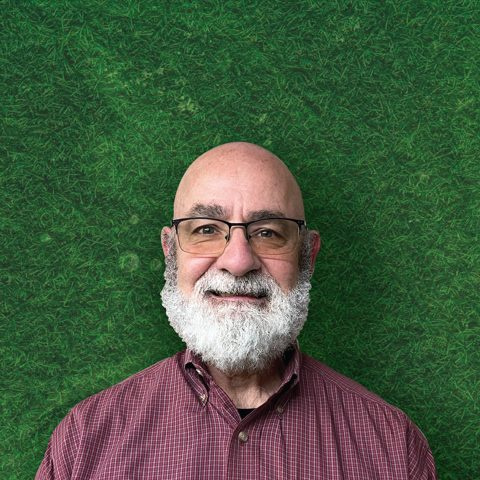

Cultural pride, community wealth, leadership.
PSAD is a community hub providing resources and opportunities for the Deaf community in the Salish Sea and surrounding regions. That's the mission.
Vision
PSAD envisions a world where the Deaf community thrives with full accessibility, communication, and inclusion.
In this world, multiculturalism and diversity are embraced, and cohesive communities enjoy peace, equity, and abundant opportunities. PSAD is a dynamic, forward-thinking organization that provides valuable resources, collaborates effectively with partners, and continuously innovates to meet the evolving needs of the community. PSAD is a recognized leader in promoting the wellness and success of the community.


It started with a picnic
Founded in 1900 as the “Seattle Deaf Mutes Society,” PSAD began with a picnic on Mercer Island attended by 35 people. It has since become a vital service and social center for the Deaf community in the Pacific Northwest.
PSAD continues to meet, support, and advocate for Deaf culture, earning recognition for its contributions, including the Service Award from the Washington State Association of the Deaf Convention.
Core values
Five commitments that guide how PSAD plans, spends, and shows up.
Driving force
Our driving force is providing accessible educational programs, knowledge and skills development, and empowering resources that foster a sense of belonging and inclusion. We believe that everyone has something valuable to contribute, and our resourcefulness allows us to find creative solutions to challenges.
We recognize that knowledge and skills are crucial components of success, which is why we strive to be a hub for learning and development. We believe that by providing access to resources, we can help individuals achieve their goals and realize their full potential.
Well-being
Our commitment to well-being extends beyond physical health and includes emotional and social well-being, which is why we are dedicated to creating an inclusive and supportive environment where everyone can thrive.
We believe in operating with integrity, always striving to do the right thing for our community. This means being transparent and accountable in our actions and decisions. We recognize the importance of mutual respect, valuing the diverse perspectives and experiences of those we serve.
Community engagement
We understand the importance of historical preservation and of community-oriented events that foster citizenship, diversity, equity, and community identity and pride. Community engagement is key to building strong and vibrant communities, which is why we are dedicated to creating spaces and events where everyone can feel welcome and connected.
We recognize the importance of celebrating our differences and promoting social and cultural understanding, which is why we prioritize initiatives that promote diversity, equity, and inclusion.
Sustainability and growth
We are committed to achieving sustainability and growth for our organization and the communities we serve. We understand that predictable and consistent support is essential to achieving prosperity, and we strive to be resourceful in all that we do.
By promoting self-sufficiency and resourcefulness, we are confident that we can help individuals and communities achieve long-term success and thrive.
Collaboration
We believe that collaboration is the key to achieving success for our organization and the communities we serve. We recognize the importance of integration and teamwork, valuing the contributions of every individual and promoting cooperation and inclusion.
We believe in forming partnerships that promote unity, recognizing that by working together, we can achieve more than we ever could alone.
The PSAD team
The current board.

John TaftPresidentpresident@psadeaf.org
Corey ClarkVice Presidentvicepresident@psadeaf.org- Justin GalloSecretarysecretary@psadeaf.org

Tom BrownTreasurertreasurer@psadeaf.org- Steven RibbeckBoard Memberinfo@psadeaf.org
- This seat is openBoard MemberAsk about serving
The PSAD team needs you.
Build your leadership skills and expand your network by supporting our community.